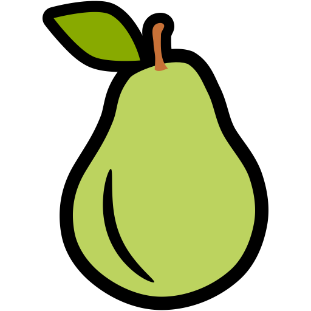
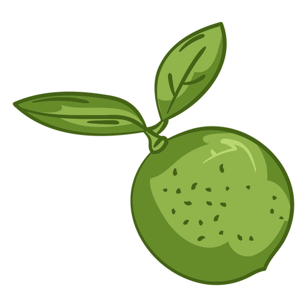

Piña

Aunque la mayoría de las bromeliáceas son epifitas, A. comosus es una planta vivaz, terrestre, aparentemente acaule, con una roseta basal de hojas rígidas, sésiles, lanceoladas, estrechamente imbricadas, con los márgenes dotados de espinas de puntas cortas, de 30 a 100 cm de largo; son ligeramente cóncavas, para conducir el agua de lluvia hacia la roseta. El tallo, rojizo, se hace visible alrededor de los tres años, creciendo longitudinalmente hasta alcanzar entre 1 y 1.5 m. De las axilas foliares aparecen pequeños retoños que los cultivadores cortan para la reproducción, aunque si se dejan pueden producir más frutos.
Del tallo brotan inflorescencias en forma de espiga, con el tallo engrosado, formadas por varias docenas de flores trímeras de color violáceo, que aparecen al final de un escapo en las axilas de las brácteas. Las flores son hermafroditas, sésiles, con brácteas inconspicuas, los tépalos externos apenas asimétricos y libres, de ovario súpero. El período de floración se extiende por un mes o más; la planta es autoestéril, un rasgo seleccionado por los criadores para favorecer la reproducción vegetativa. La polinización está a cargo, en su entorno natural, de los colibríes.[cita requerida]
El fruto es una pequeña baya, que se fusiona tempranamente con las adyacentes en un sincarpio o infrutescencia, grande y de forma ovoide. El corazón del sincarpo más fibroso se forma a partir del tallo axial engrosado, y las paredes del ovario, la base de la bráctea y los sépalos se transforman en una pulpa amarilla, apenas fibrosa, Es muy amarilla y tiene pinchos piel cerúlea y espinosa del fruto. La cavidad de la flor endurece sus paredes; según el cultivar aparece como una celdilla vacía junto a la piel, en la que se conservan los restos duros y filiformes de los estambres, o se reduce a unas ranuras. Más hacia el interior, las celdas del ovario, que contienen las semilla en el raro caso de fertilización, también se estrechan considerablemente. Estas últimas son de tamaño bimilimétrico, arrugadas, de forma amigdaloide y de color pardo más o menos oscuro
Pera

Se denomina pera al fruto de distintas especies del género Pyrus, integrado por árboles caducifolios conocidos comúnmente como perales.Sin embargo, cuando se trata del fruto comestible, se hace referencia mayormente al producido por el llamado peral común (Pyrus communis). La pera es una fruta muy jugosa, carnosa y una de las más importantes producidas en las regiones templadas.
En China son consideradas como un símbolo de longevidad porque, aunque sus flores sugieren fragilidad, crecen en el peral, un árbol caracterizado por su fuerza y longevidad capaz de resistir las sequías más duras. El carácter intenso bajo esa fragilidad aparente es una característica común en las flores y frutos de su familia —la de las rosáceas—: rosas, fresas, melocotones y cerezas. Además, su inconfundible sabor resiste la destilación para elaborar aguardiente. La pera es una de las frutas que mejor tolera el organismo y de las que menos alergias producen, tiene un alto contenido en agua (más del 80%), por lo que es muy fácil de digerir; es rica en fibra, vitamina C y posee propiedades antioxidantes.Por ende se considera muy adecuada para lograr un enriquecimiento vitamínico y favorecer una dieta sana y equilibrada.
Aguacate

El aguacate Maluma fue descubierto por el Sr. A. G. Dries Joubert en su granja Maluma en la región de Levubu en el norte de Sudáfrica a principios de los años 90. Fue descrita por el Sr. Joubert quien observó su tamaño proporcionalmente más grande, precocidad y alto rendimiento en comparación con los demás árboles cultivados en su huerto de la variedad comercial 'Hass'.1
El Sr. Joubert trasladó muestras de Maluma al vivero Allesbeste en Sudáfrica, un vivero de aguacate que se especializa en la reproducción de árboles de aguacate asexualmente utilizando un método patentado llamado microclonación,2 para investigar su singularidad y su viabilidad comercial. En Allesbeste se realizaron pruebas de campo semicomerciales y se descubrió que la fruta era lo suficientemente única y comercialmente viable para declararla como una nueva variedad de aguacate.13 Hasta este punto, la fruta se denominaba informalmente 'Dries Hass' (del primer nombre del Sr. Joubert) y se vendía simplemente como 'Hass'. El vivero procedió a nombrar formalmente como Maluma porque así se llamaba la granja donde fue descubierto y también se le otorgó un derecho de obtentor en Sudáfrica el 7 de noviembre de 2004.4 Las autoridades sudafricanas le otorgaron el estado de exportación bajo su propio nombre en 2006, después de lo cual se reveló al mundo internacional del aguacate en el VI Congreso Mundial del Aguacate celebrado en Viña del Mar, Chile en 2007. Tras esto, Maluma se ha plantado en la mayoría de las regiones productoras de aguacate del mundo y se le ha otorgado protección vegetal registrada en la muchos de esos países, mientras que en otros todavía está pendiente.56
Limon

Limón es un nombre común de tres frutas cítricas fragantes y de sabor ácido, utilizadas principalmente en el sector alimentario. En primer lugar, se conoce como limones a aquellos frutos producidos por el híbrido Citrus × aurantifolia, árbol llamado popularmente limonero.1 Por otra parte, en el Cono Sur y España se le da el nombre de "limón" al fruto de C. limon.2 Finalmente, hay áreas en que el término designa el fruto de C. latifolia.
Independientemente de que estas tres frutas tienen apariencias y propiedades diferentes, sus usos principales se asemejan.